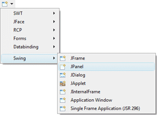
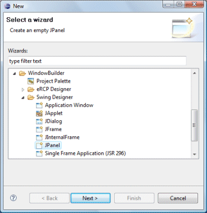
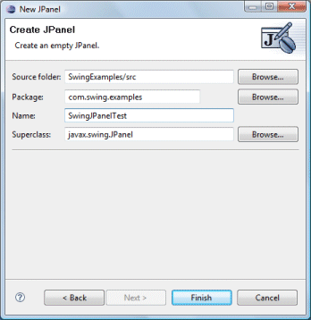
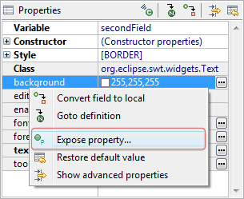
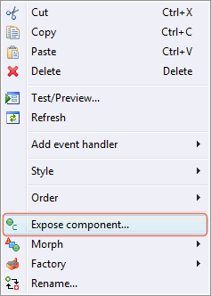

| Subclasses of the Swing JPanel class can be
created using the Swing JPanel wizard. The wizard can be
selected from the drop down wizard menu or from the
Eclipse New wizard.
To use the wizard, select the project source folder and package to contain the class. Then enter the class name and hit the Finish button. The javax.swing.JPanel class is the default superclass. You can select an alternative superclass by entering its name into the Superclass field or by choosing it via the bottom Browse button. |
  |
|
import When editing Swing JPanels, all of the standard Swing layouts, containers, widgets and menus are available. Custom or third party controls may be added via the Choose Component command. You may also preview your panel using different look and feels using the drop down look and feel list in the toolbar. Use the Expose property... command added to property pane context menu to expose any widget property as a public property of the class. Use the Expose component... command added to the popup menu in the Design View to add an accessor for any widget.   |